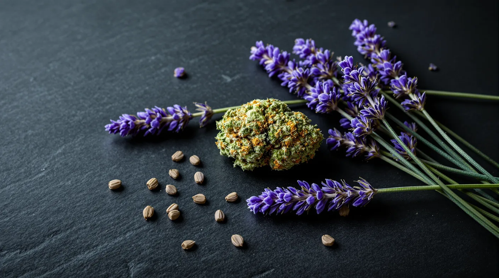

Linalool in Cannabis: Aroma, Sources and What Research Says
Linalool is the floral, lavender-like terpene in some cannabis. Find out where it comes from, how strong the research is, and how to read a label for it.

Key takeaways
- Linalool is the floral terpene that gives lavender, coriander and basil much of their scent, and it shows up in smaller amounts in some cannabis.
- It comes in two mirror-image forms: one smells woody and lavender-like, the other sweeter and more citrusy.
- Studies on relaxation come mostly from mice and small aromatherapy-style human tests, so they don’t show what a linalool-rich strain will do for you.
- Linalool can oxidize in air into compounds that cause skin allergies in some people.
- Look for linalool on a product’s terpene panel; it’s usually a supporting terpene, often well under 0.5% of flower weight.
The linalool terpene is the floral note you know from a field of lavender, and it turns up in some cannabis, too. It's usually a supporting player rather than the star, but it can give a strain a soft, perfumed edge. Read on for where linalool comes from, what the studies show and where they stop, and how to track it down on a label.
Terpenes in cannabis
Terpenes give each strain its scent and much of its flavor. Cannabis makes them in its trichomes, the frosty resin glands on the flowers, in the same place it makes THC.
Amounts are modest. A 2022 look at lab results from six U.S. states found that terpenes added up to about 2% of a flower sample's weight on average. A single terpene seldom went past 0.5%, and in most samples, most of them stayed below 0.2%. For more on how terpenes work, see our cannabis terpenes guide.
What the linalool terpene is
So what is linalool? It's a monoterpene alcohol, a small aroma molecule with a light, floral character, and it's often called the lavender terpene. It's also one of the fragrance industry's most important ingredients. A 2022 review notes that it's common in foods and in perfumes, lotions, soaps, shampoos, detergents and cleaning products. Most of the linalool in those products is made synthetically rather than extracted from plants.
In cannabis, linalool usually plays a smaller role than the big three of myrcene, beta-caryophyllene and limonene. When it's present at a noticeable level, it softens a strain's aroma with a sweet, floral finish.
Linalool smell and taste
Most people describe linalool as floral and lavender-like, with a fresh, slightly spicy lift. The full picture is more interesting, because linalool comes in two mirror-image forms that smell different:
- (R)-(−)-linalool, called licareol, has a woody, lavender aroma.
- (S)-(+)-linalool, called coriandrol, smells sweet, floral and herbal, with citrus and fruity notes.
Your nose is very sensitive to the lavender form: its odor threshold is about nine times lower than the sweeter form's. In cannabis, linalool's floral note often mixes with others, so a strain might read as floral-citrus with limonene or floral-musky with myrcene. Flavor tends to follow, with a gentle, perfumed finish on the exhale.
Where linalool occurs
- Lavender. In one essential oil studied, linalool made up about 27% of the oil.
- Basil. One basil oil studied was nearly 70% linalool.
- Coriander, mint and other herbs. Linalool is also a component of rosewood, ginger, bay laurel, thyme, sage, nutmeg and cinnamon.
- Tea. Linalool and its close relative linalyl acetate are the main flavors in Earl Grey tea.
- Cannabis. Usually as a supporting terpene in modest amounts.
What research explores, and its limits
Linalool has a long history in aromatherapy, so many studies of linalool effects look at what happens when it's inhaled. Most of that work involves animals or small groups of people.
Relaxation. In a 2018 study, mice that smelled linalool behaved in a less anxious way in standard maze and light-dark box tests, without losing coordination. The effect vanished in mice that couldn't smell, which suggests the aroma itself, sensed through the nose, was doing the work. In a small 2005 study of 24 healthy volunteers, a faint scent of the lavender-type form, (R)-(−)-linalool, lowered heart rate and produced calm, vigorous moods on a standard questionnaire. The sweeter form didn't lower heart rate.
Skin. Pure linalool is not an allergen, or only a very weak one. Air changes that: as it oxidizes, it forms compounds that can cause skin allergies. In a 2012 study of 2,900 people with dermatitis in six countries, 6.9% reacted to oxidized linalool in patch tests. That's worth knowing if you use lavender-scented lotions or topicals.
Immunity and stress. In a 2009 rat study, breathing linalool during two hours of restraint stress dampened stress-related changes in white blood cells and in the activity of more than 100 genes. That's an interesting lab signal, and nothing more.
The limits are important:
- Most findings come from animals, and the human studies are small.
- The research tests linalool as a smell, often in a controlled chamber, not as part of smoked or eaten cannabis.
- Doses and conditions in the lab rarely match a real product.
None of this shows that a linalool-rich strain will relax you or support your skin or immune system, whatever claims about linalool benefits you may read online. Before using linalool or lavender products for any health reason, ask a clinician, especially if you're pregnant or on medication.
How linalool-rich cannabis is often described
Floral, linalool-forward strains often get described as soft, gentle or calming, and plenty of people save them for the evening. That reputation comes from personal reports, not controlled tests. Your dose, the product's THC level and your own tolerance will shape the experience far more than any one terpene. If evenings are your focus, our guide to indica strains for sleep looks at the evidence around bedtime use.
Strain types often reported to contain linalool
Because linalool is usually a minor terpene, lists of linalool strains deserve some skepticism. In the 2022 lab dataset described above, none of the three major chemical groups centered on linalool. They were built around caryophyllene and limonene, myrcene and pinene, or terpinolene. Linalool is more often a supporting note in strains described as floral, perfumed or lavender-like.
Names and descriptions are only a rough hint, since the same strain can test differently from batch to batch. A floral nose is a good first clue, and the terpene panel is the real answer.
Choosing products: lab results and terpene percentages
Terpene data, when a producer provides it, usually sits on the label or in the lab results. To read it for linalool:
- Find the panel. Not every package lists terpenes, so check the label and any linked lab report.
- Look at rank, not just presence. Linalool listed fourth or fifth adds a hint of floral character. In the top two, expect a noticeably floral aroma.
- Keep the numbers in context. With most terpenes under 0.2% of flower weight in most samples, a linalool reading in the tenths of a percent is meaningful.
- Store it well. Air slowly oxidizes linalool, and warmth drives off terpenes, so a sealed container in a cool, dark spot protects the aroma.
Is linalool worth seeking out?
If you love floral aromas, yes: linalool can make a strain smell and taste softer and more complex, and following your nose is a fine way to choose. If you're hoping for a particular effect, the evidence isn't there yet. Your dose, the product's THC level and how you consume will matter far more.
Next time you're in our Irvington store, a budtender can help you read a terpene panel or compare aromas.
Frequently asked questions
What does linalool smell like?
Floral and lavender-like, with a fresh, slightly spicy lift. Linalool comes in two mirror-image forms: licareol smells woody and lavender-like, while coriandrol is sweeter, with herbal, citrus and fruity notes. In cannabis it usually mixes with other terpenes, so it may come across as floral-citrus beside limonene or floral-musky beside myrcene.
Is linalool relaxing?
It might be as a scent, but the evidence is limited. Mice that smelled linalool behaved less anxiously, and a faint linalool scent lowered heart rate in a small study of 24 volunteers. Those tests used linalool as an aroma, not as part of cannabis, so they don’t show that a linalool-rich strain will relax you.
Which products list linalool?
Any product with a terpene panel on its label or lab report may list it. Flower, pre-rolls, vapes and concentrates sometimes include terpene data, but not every package does. Linalool is usually a supporting terpene, so look at where it ranks. Our budtenders can help you find and read terpene information in the store.
Does linalool get you high?
No. Linalool isn’t intoxicating on its own. You meet it in lavender, basil, coriander and Earl Grey tea without any high at all. Researchers haven’t settled whether it changes how THC feels, so the THC level and your dose remain the main drivers of how a strain affects you.
Is linalool in lavender the same as in cannabis?
Chemically, yes. Linalool is the same compound whichever plant makes it, but it comes in two mirror-image forms that smell a little different, and plants vary in which form they make. The bigger difference is amount: one lavender oil studied was about 27% linalool, while cannabis flower usually carries a small fraction of a percent.
Sources
- Mączka et al. (2022), natural compounds in the battle against microorganisms: linalool, Molecules pmc.ncbi.nlm.nih.gov
- Harada et al. (2018), linalool odor-induced anxiolytic effects in mice, Frontiers in Behavioral Neuroscience pmc.ncbi.nlm.nih.gov
- Kuroda et al. (2005), sedative effects of jasmine tea odor and (R)-(−)-linalool on autonomic nerve activity and mood, European Journal of Applied Physiology pubmed.ncbi.nlm.nih.gov
- Bråred Christensson et al. (2012), air-oxidized linalool: a frequent cause of fragrance contact allergy, Contact Dermatitis pubmed.ncbi.nlm.nih.gov
- Nakamura et al. (2009), stress repression in restrained rats by (R)-(−)-linalool inhalation, Journal of Agricultural and Food Chemistry pubmed.ncbi.nlm.nih.gov
- Smith et al. (2022), the phytochemical diversity of commercial cannabis in the U.S., PLOS ONE pmc.ncbi.nlm.nih.gov
For adults 21 and older. Keep cannabis away from children and pets, and never drive after consuming. In New Jersey, cannabis smoking is allowed where cigarette smoking is permitted, unless stated otherwise.
1070 Springfield Ave Suite C, Irvington, NJ 07111